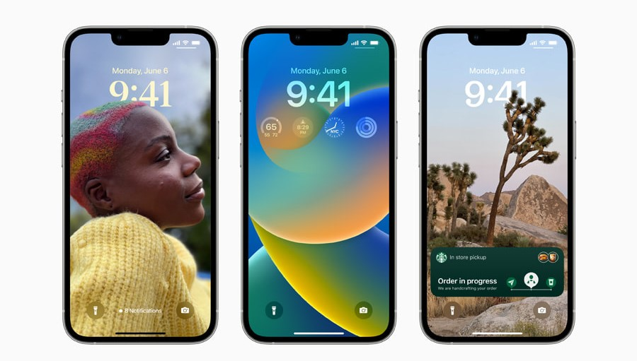
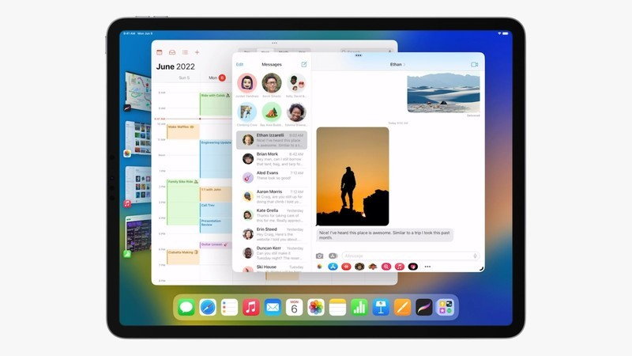
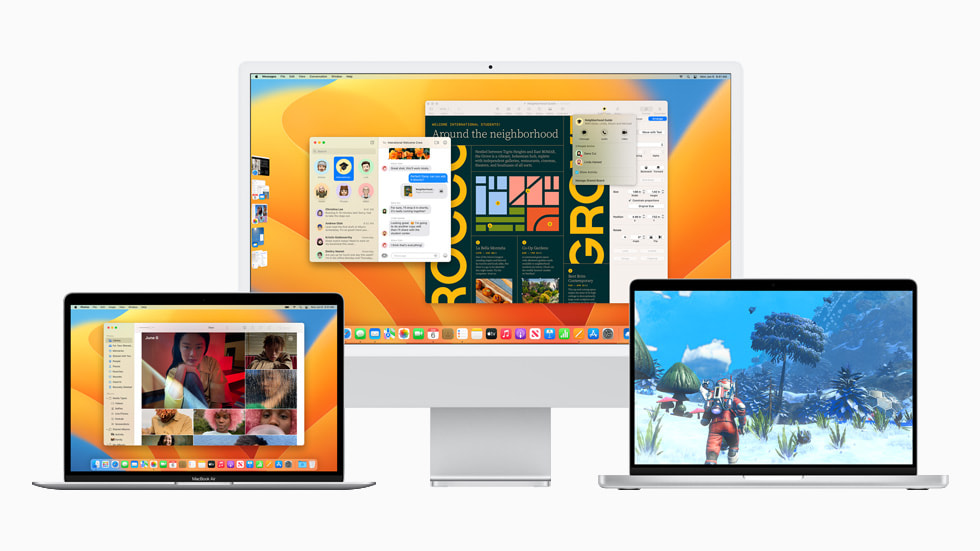
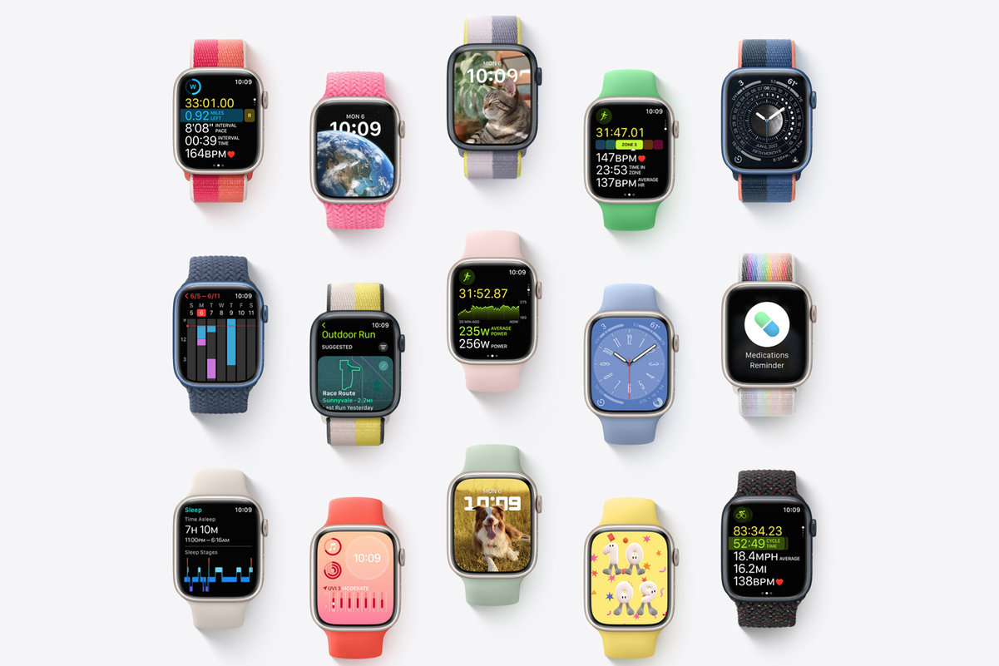
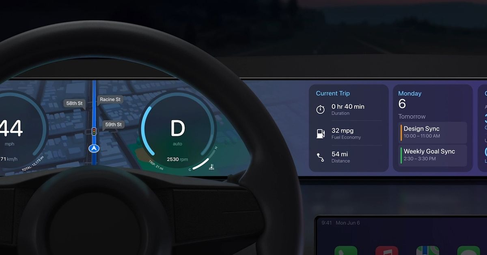

در مراسم WWDC22 چه گذشت؟
حالت شب

امیر محمد محمدی قره باغ
بالاخره موعد رویداد بزرگ WWDC امسال نیز فرارسید و امسال مثل هرسال اپل از محصولاتی رونمایی کرد که خیلی ها از اپل فن ها گرفته تا رقیبان منتظرشان بودند
iOS 16
کریگ فدریکی روی صحنه آمد و توضیحاتش در مورد آخرین سیستم عامل های آیفون را آغاز کرد این نسخه بیشتر هدف شخصی سازی دارد چیزی که کاربرا اندروید از مدت ها قبل این توانایی هایشان را در شخصی سازی به رخ کاربران آ او اس می کشیدند برای مثال شما در این نسخه می توانید لاک اسکرین موبایل خود را به صورت کامل شخصی سازی کنید می توانید به لاک اسکرین ویجت اضافه کنید و فونت و رنگ ساعت را تغییر دهید همچنین تصویری که برای پس زمینه انتخاب می کنید حالا مانند اپل واچ قابلیت تشخیص پس زمینه عکس را دارد و می توان سوژه را روی ساعت انداخت در برنامه آی مسیج می توانید بعد از ارسال پیام آن را ویرایش کنید و حتی Undo کنید همچنین قابلیت Shareplay نیز به این نرم افزار اضافه شده است همچنین در این نسخه از آی او اس لایو تکست که پیشتر در نسخه 15 معرفی شده بود بهبود یافته و برای مثال می تواند واحد های پول را به یکدیگر تغییر دهد و به صورت خودکار تصویر را ترجه کند اپل فوتوز جدید حالا می تواند تصاویر را با کمک iCloud Share Photo Library با 5 نفر از اعضای خانواده به اشتراک بگذارد از این به بعد هم برنامه Apple Fitness برای کاربران آیفون هم در دسترس خواهد بود و دیگر برای استفاده از آن نیازی به اپل واچ نخواهد بود
iPadOS 16
در نسخه 16 ام میتوان از قابلیت کاربردی Collaboration بهره برد که بر مبنای کارگروهی طراحی شده است نسخه جدید ویجت های جدید و تصاویر پس زمینه با عمق میدان متغییر دارد همچنین قابلیت StageManager نیز که در مک او اس جدید(ونتورا) معرفی شد تنها به آیپد هایی که پردازنده ام وان دارند اضافه شد
macOS Ventura
در این نسخه قابلیت های بسیار کاربردی به مک او اس اضافه شده است از جمله قابلیت StageManager که حالا می توانید نرم افزار هایی که در حال اجرا هستند کنار صفحه ببینید و درصورت نیاز سریع بین آنها جابجا شوید در نسخه ونتورا موتور جستجوی مک یعنی Spotlight بهینه یافته و می توان در آن جستجوی اینترنتی دقیق داشت و حتی می توان با آن درون نوشته های موجود در تصاویر موجود در فوتوز جستجو کرد همچنین تصحیح کننده غلط املایی و سوییچ تماس ویدیویی از آیفون به مک و سیستم رمز نگاری جدید یعنی Passkeys و قابلیت استفاده از دوربین آیفون ر تماس های تصویری مانند وبکم تنها با قرار دادن آیفون در پشت نمایشگر از هیجان انگیز ترین آپشن های ونتورا بودند
WatchOS9
در نسخه جدید ساعت ها می توانند با توجه به طول قدم ها نوع دو را مشخص کنند و داده مناسب آن را به کاربر نمایش دهند همچنبن چهار واچ فیس جدید نیز اضافه شده استیک یادآور نیز برای مصرف قرص و دارو نیز افزوده شده است از این به بعد ساعت ها می توانند زمان قرارگیری کابر در حالت فیبریلاسیون دهلیزی را تشخیص دهند
Apple carplay
اپل کارپلی حالا با تمام سیستم های کامپیوتری هماهنگ و بسیار قدرتمند است با کارپلی حالا همه چیز خودروی خود را تحت نظر و کنترل دارید البته برای کاملا به این هدف رسیدن باید شرکت های سازنده خودرو با اپل همکاری های لازم را داشته باشند حالا برویم سراغ سخت افزار!
پردازنده M2
پردازنده جدید به اندازه m1pro/m1max قدرتمند نیست اما از ام وان یعنی نسل قبلی 18 درصد سریع تر است و حالا می توان علاوه بر رم 8 و 16 از رم 24 گیگابایتی نیز بهره برد این تراشه با لیتوگرافی 5 نانومتری عرضه خواهد شد این تراشه 50 درصد پهنای باند بیشتر و 35 درصد عملکرد گرافیکی بهتری نسبت به نسل قبل دارد و می تواند در هر ثانیه 15.8 تریلیون عملیات انجام دهد
مک بوک ایر و پرو جدید

مک بوک پروی 2022 دقیقا همان نسخه 2020 است منتها با پردازنده جدید و هیچ تغییر ظاهری ندارد اما مک بوک ایر جدید با طراحی و دیزاین جدید راهی بازار شده است و طراحی اش مشابه برادر های بزرگترش یعنی پروی 14 و 16 اینچی است حالا در مک بوک ایر جدید شاهد ناچ و کیبرد جدید هستیم البته وبکم نیز 1080 شده و همچنین شارژر مگ سیف محبوب نیز به مک بوک ایر افزوده شده است این دستگاه در رنگ های خاکستری فضایی،طلایی،آبی راهی بازار شده البته قیمت امسال کمی از نسخه قبلی بالاتر رفته و نسخه بیس این دستگاه با قیمت 1200 دلار راهی بازار شد